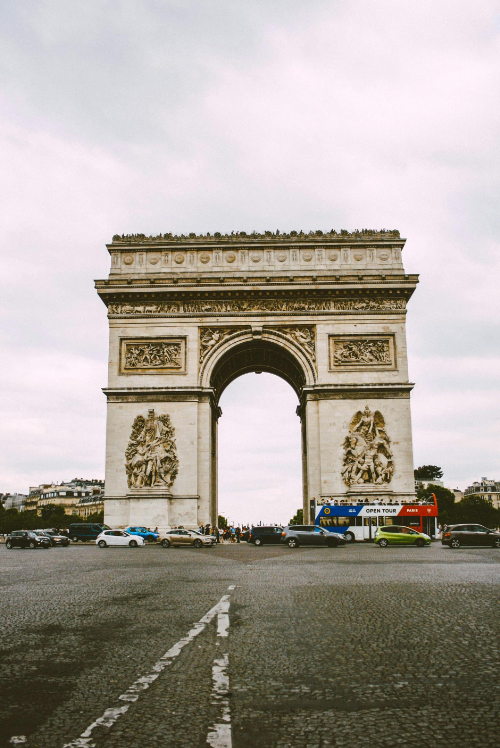
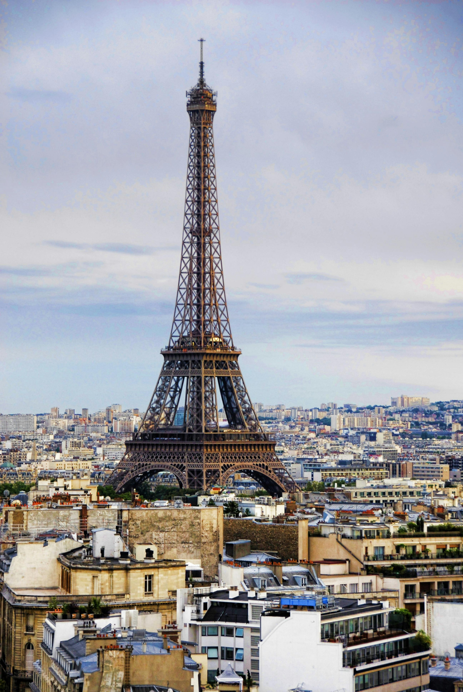
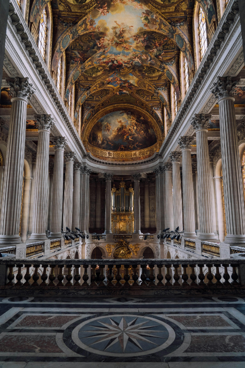

凱旋門
戦争の勝利を記念して凱旋式を行うために建てられた門であり、ナポレオン・ボナパルトがフランスのパリに作らせた。

エッフェル塔
フランスのパリにある高さ324メートルの鉄骨構造の塔で、1889年のパリ万博博覧会のために建設された。今ではパリのシンボルとして知られている。

ヴェルサイユ宮殿
ヴェルサイユ宮殿は、フランスのパリ郊外にある宮殿で、ルイ14世が建設を命じ17世紀から18世紀にかけてフランスの王室の居城、そして政治の中心として栄えた。
